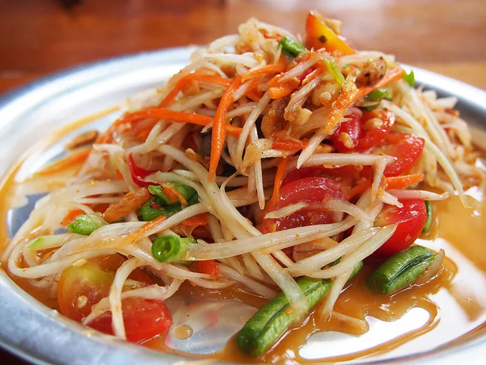
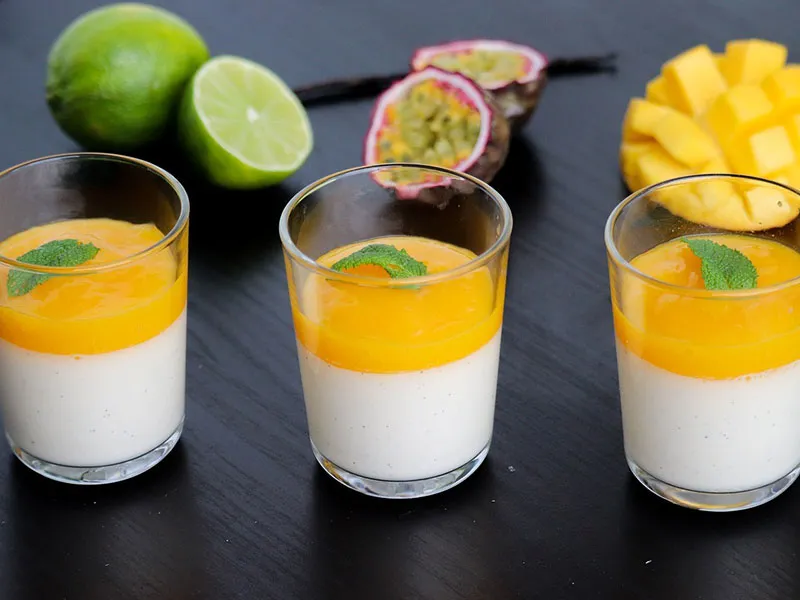

kitchen番薯裡的水果拼盤-橘子的營養分析
1. **維生素C**：橘子是維生素C的極佳來源，每100克橘子含有約53毫克的維生素C，這超過每日建議攝取量的一半。維生素C能增強免疫力，促進膠原蛋白合成，並具有抗氧化作用，有助於保護細胞免受自由基損傷。
2. **膳食纖維**：橘子富含膳食纖維，每100克橘子含有約2克纖維。膳食纖維有助於促進消化，預防便秘，並能降低膽固醇水平，對心血管健康有益。
3. **維生素A和類胡蘿蔔素**：橘子含有維生素A及其前體類胡蘿蔔素，這些營養素對視力健康、皮膚保養和免疫系統功能有重要作用。類胡蘿蔔素還具有抗氧化特性，有助於預防慢性疾病。
4. **礦物質**：橘子含有多種礦物質，如鉀、鈣和鎂。鉀有助於調節血壓，維持心臟健康；鈣和鎂對骨骼健康和神經功能有重要作用。這些礦物質共同促進身體正常運作和整體健康。
school番薯裡的水果拼盤-木瓜的營養分析
- 維生素C：每100克木瓜含有約60毫克的維生素C，幾乎達到成人每日建議攝取量的三分之二。維生素C能有效增強免疫力，促進膠原蛋白合成，並有助於抗氧化。
- 維生素A：木瓜富含維生素A，每100克木瓜中含有約950國際單位的維生素A。這有助於維持視力健康和皮膚光滑，並在細胞增生和修復中扮演重要角色。
- 膳食纖維：木瓜的膳食纖維含量高，每100克含有約2克纖維。膳食纖維能促進消化，預防便秘，有助於維持腸道健康，並能降低心血管疾病的風險。
- 木瓜酵素和鉀：木瓜含有木瓜酵素（Papain），這種酵素有助於分解蛋白質，促進消化，並有抗炎作用。木瓜還富含鉀，每100克木瓜中含有約182毫克鉀，有助於調節體內電解質平衡和維持正常血壓。

ac_unit番薯裡的水果拼盤-草莓的營養分析
- **維生素C**：草莓是維生素C的豐富來源，每100克草莓含有約59毫克的維生素C，幾乎達到成人每日建議攝取量的全部。維生素C能增強免疫力，促進膠原蛋白合成，有助於皮膚健康和抗氧化。
- **抗氧化劑**：草莓含有多種抗氧化劑，包括花青素和鞣花酸，這些物質有助於中和自由基，減少細胞損傷，降低患上心血管疾病和某些癌症的風險。
- **膳食纖維**：每100克草莓含有約2克的膳食纖維。纖維有助於促進消化健康，預防便秘，並能調節血糖水平，對心血管健康有益。
- **葉酸**：草莓富含葉酸，每100克含有約24微克。葉酸對於孕婦尤其重要，因其有助於胎兒神經管發育，並在紅血球形成和細胞分裂中扮演重要角色。草莓的低熱量特性也使其成為健康飲食的一部分。
brightness_7番薯裡的水果拼盤-芒果的營養分析
- 維生素C：芒果是維生素C的豐富來源，每100克芒果含有約36.4毫克的維生素C，約佔每日建議攝取量的40%。維生素C能增強免疫系統，促進膠原蛋白合成，有助於抗氧化，保護細胞免受自由基損傷。
- 維生素A：芒果富含維生素A及其前體β-胡蘿蔔素，每100克芒果含有約54微克的維生素A。維生素A對視力健康、皮膚維護及免疫功能有重要作用，β-胡蘿蔔素也具有抗氧化特性。
- 膳食纖維：芒果的膳食纖維含量高，每100克芒果含有約1.6克纖維。膳食纖維有助於促進消化，預防便秘，並能調節血糖水平和降低膽固醇，對心血管健康有益。
- 鉀和鎂：芒果含有豐富的鉀和鎂，每100克芒果含有約168毫克的鉀和10毫克的鎂。鉀有助於維持電解質平衡和調節血壓，鎂對於神經功能和肌肉健康有重要作用。這些礦物質共同促進身體的正常運作和整體健康。
